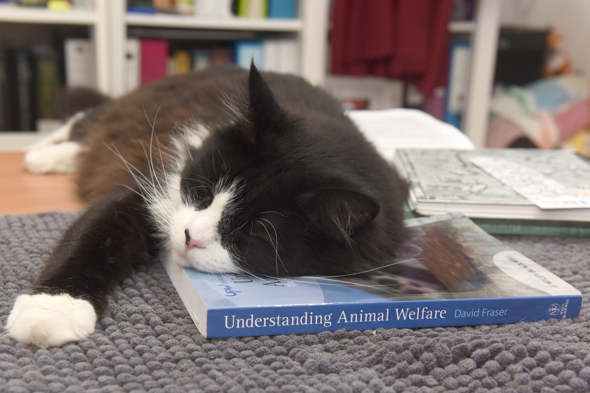

(Photo by Dr. Anne Quain)
Syllabus for Animal Welfare and the Ethics of Animal Use (APBI 315)
We are conducting the class on the traditional, ancestral, and unceded territory of the xwməθkwəy̓əm (Musqueam) people whose culture includes a distinctive understanding of animals that has been passed from one generation to the next on the site now occupied by UBC.
The class meets on Tuesday and Thursday, 14:00-15:20. Because the course is strongly based on discussion and exchange of ideas, regular attendance is highly recommended.
Classes will meet over Zoom for the first few weeks and last few weeks of the semester. The Zoom link appears below and can also be accessed in Canvas :
In-person classes will meet in MacMillan Bldg., room 160.
The course relies heavily on “discussion-based learning”. Most classes involve exercises and discussions that are based on readings that must be done before the class. A high level of attendance and participation is crucial for success. Little material is presented in lecture format, and this is intended to help consolidate learning that happens through reading, discussion and exercises. Lecture material will not typically be posted on-line; factual recall of lecture material is not an objective of the course.
Daniel Weary (he, him, his), Room 189 MacMillan, 604-822-3954, danweary@mail.ubc.ca
Elizabeth Russell (she, her, hers), Room 190A MacMillan, elizr18@mail.ubc.ca
We like teaching this course and don’t want to put limits on when you can contact us. Normally we would say to drop in when it is convenient for you. In this day in age, we recommend reaching out via email first, then we can arrange a time to meet up. Please don’t hesitate to be in touch.
Evaluation emphasizes comprehension of concepts, critical thinking, independent research and effective communication, as evidenced by an oral presentation of a current event, 4 written assignments, in-class discussion, a term paper, and an oral or electronic presentation of the term paper research to the class.
|
Component |
Marks |
Due date |
|
Participation Introductory exercise (2); Peer review x 2 (4); Entry/Exit questions (14) |
20 |
Throughout term
|
|
Topic selection |
1 |
Jan 25th |
|
Term paper outline |
4 |
Feb 15th |
|
Assignment 1. Analyzing a controversial practice |
5 |
Jan 25th |
|
Assignment 2. Science-based analysis of a policy issue |
10 |
Feb 17th |
|
Assignment 3. Applying science to a practical problem |
10 |
Mar 15th |
|
Term paper (research on a specific issue) |
40 |
Apr 8th |
|
Presentation |
10 |
Throughout term |
In the introductory sessions we will examine one controversial issue to see the range of factors that enter into decisions about the use of animals. Then follows a series of classes, each on a different aspect of animal welfare research. Third, we look at several different ethical theories that are used in contemporary discussions of animal use. A series of student presentations throughout the term will expose the class to a wide range of issues involving animal welfare and the ethics of animal use.
This course involves a lot of writing. Before taking the course, be sure you are very clear on what is considered plagiarism at UBC. Everything should be written “from scratch” in your own words. If you want to include text from any source – a paper, the internet, or another student – the material should appear in quotation marks and the source should be clearly acknowledged. Sometimes plagiarism happens accidentally, for example if someone copies material into their rough notes and then uses the notes in their own writing. To help avoid such problems we request that students use Turnitin for their term paper and other assignments, and include your Turnitin number on the title page. Please use Class ID 27830581 and the Enrollment key “APBI315”.
UBC provides resources to support student learning and to maintain healthy lifestyles but recognizes that sometimes crises arise and so there are additional resources to access including those for survivors of sexual violence. UBC values respect for the person and ideas of all members of the academic community. Harassment and discrimination are not tolerated nor is suppression of academic freedom. UBC provides appropriate accommodation for students with disabilities and for religious observances. UBC values academic honesty and students are expected to acknowledge the ideas generated by others and to uphold the highest academic standards in all of their actions. Details of the policies and how to access support are available on the UBC Senate website.